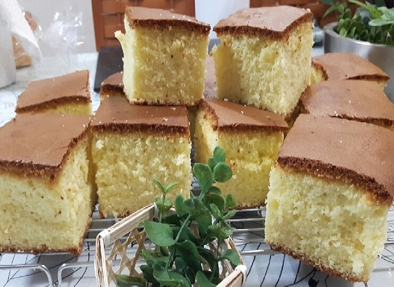

|  |
어원은 에스파냐의 옛 지방인 카스티야를 포르투갈어로 읽은 것이며, 그곳에서 만든 과자를 그대로 카스텔라라 하였다. 카스텔라의 원료는 달걀·설탕·밀가루·소금·물엿·꿀 등인데, 그 배합량이나 굽는 방법에 따라 맛이 여러 가지이다. 일반적인 방법은 달걀 노른자에 설탕·물엿·꿀을 섞어 충분히 젓고, 따로 달걀 흰자를 거품을 내어 이것에 섞고, 다시 밀가루를 섞어 가볍게 저은 다음 오븐팬에 부어 굽는다. 수 분 후에 팬을 꺼내어 표면의 거품을 걷어내고 철판으로 뚜껑을 하여 다시 오븐에 넣어 180℃ 정도의 열로 1시간 가량 구워낸다. 절단면의 밀도가 고르고 적당한 탄력이 있는 것이 잘된 것이다. |